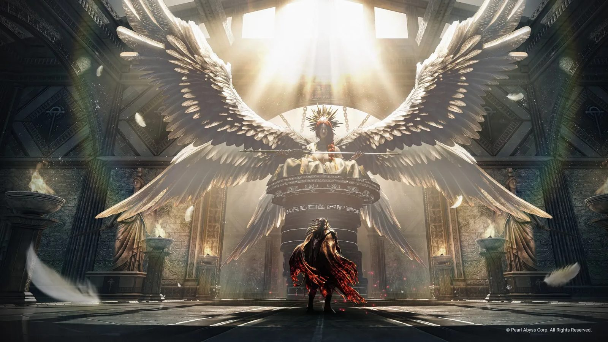
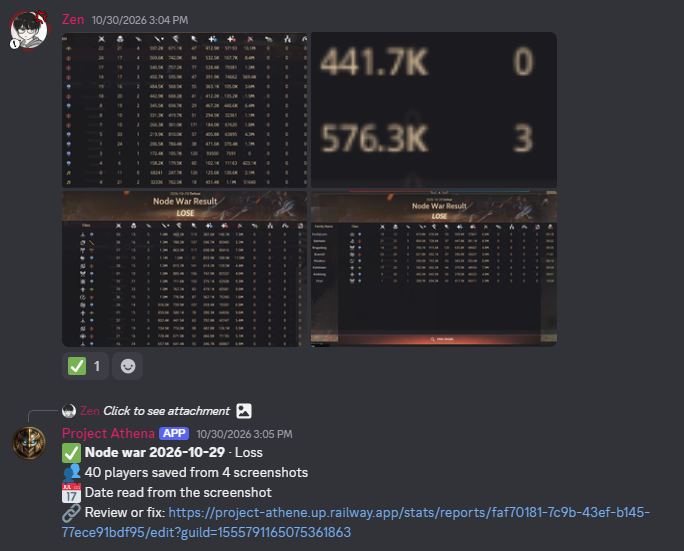
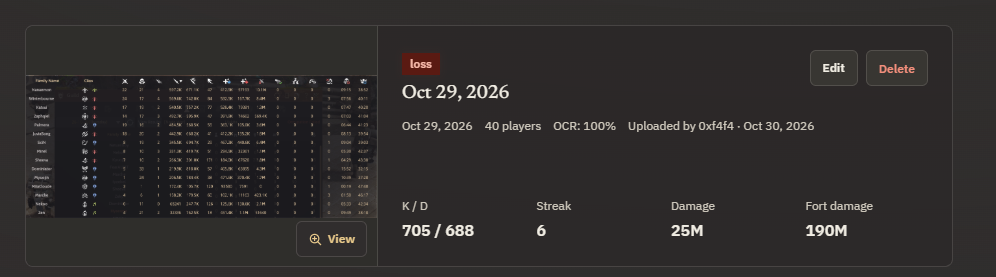
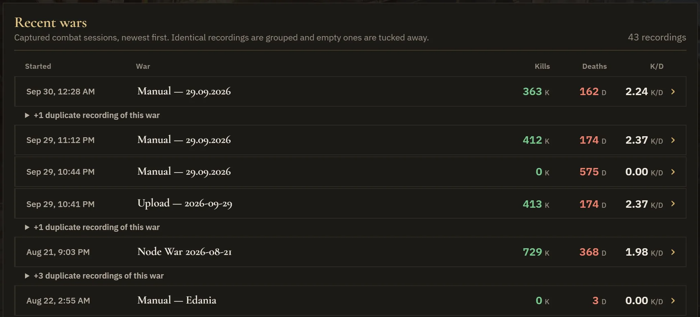
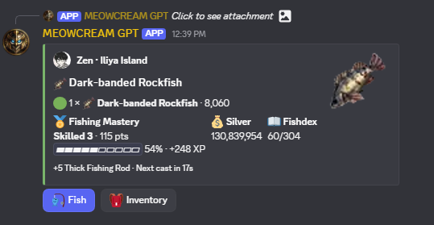

Athena
Signups, rosters, stats and kill maps for Black Desert guilds, in Discord.

Athena started as a roster bot for my guild's Node Wars and grew into the place the guild plans, fights and reviews. Officers schedule wars in Discord, members sign up from buttons on the announcement, and after the war the scoreboard screenshot turns into stats on the web dashboard. My guild has run its wars on it every week since.
Rosters and events
Node Wars, Guild Boss Raids and custom events, created from a Discord wizard of buttons, select menus and modals. Rosters fill groups like Mainball, Defense, Zerker and Shai with capacity presets per war tier and weekday, overflow to Bench when a group is full, and repeat weekly. A minute-based scheduler posts each event on time, recovers after a restart and never posts twice.
Scoreboards become stats
Post the end-of-war scoreboard screenshots on the website or in Discord, and Athena reads every player's kills, deaths, damage and healing, then keeps the leaders for each stat. Reading the numbers was the hardest part of the project. Tesseract kept misreading names and digits on the busy scoreboard, and Gemini Flash-Lite dropped players and misread about 18% of rows. Claude Haiku read every number correctly on 89 real players, so it goes first now, with Gemini and Tesseract as fallbacks and retries for temporary errors.
In Discord, an officer drops the screenshots into the channel and the bot replies with what it saved: the result, how many players it read, the date taken from the screenshot, and a link to review or fix the report.

On the dashboard each upload becomes a report with the war's K/D, kill streak, damage and fort damage, plus how sure the OCR was, so it can be checked and corrected.


Every war on record
Kills, deaths and K/D for every recorded war, newest first. Duplicate recordings from several officers are grouped automatically, and attendance shows who fought in which war. Player search, class tracking and side-by-side war comparisons sit on top of the same data.

Every kill on the map
When a war is recorded with Seer, the log uploads to Athena when the war ends. Each kill lands on the map at the place it happened, beside the combat feed, and the map can be shared with a link.

Fishing game
An idle fishing game inside the same bot, based on Black Desert's own fishing system. /fish catches from 302 fish across zones, /sell turns them into silver for better rods, floats and outfits, /enhance upgrades gear with a chance to fail, and /autofish hires a Fisherman who keeps fishing while you're away. Servers can pick a role the bot pings when a sea boss appears.

Also in the bot
/ocrreads in-game chat screenshots in several languages.- Adventurer and guild lookups through the Black Desert community API.